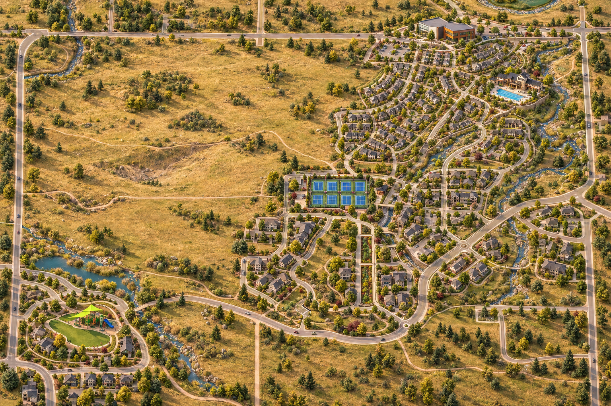

A NEIGHBORHOOD IN MINIATURE
Take a closer look.
Find a favorite spot. Open it up. Discover what’s inside.

Schematic artwork · four landmark study
01 / STERLING CENTER
A familiar place.
A little more to discover.

A directory reveal,
not an interior floor plan.
THE TWO MOMENTS
The big picture. Then the details.
A continuous landscape for exploring.
An opened landmark for finding what you need.
ABOUT THIS STUDY
A visual direction.
Real places to start from.
This is a separate design study of four landmarks. The names and Sterling Center groupings come from the existing directory. The generated landscape is schematic: roads, buildings, water and paths still need geographic validation. It is not a navigation map or a complete inventory.
The working Atlas and both earlier comparisons are unchanged. Trails, the rest of the directory and future development remain in the working comparison.